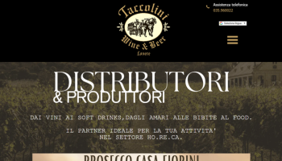
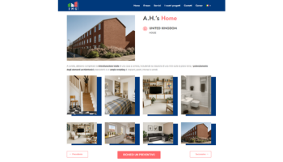

Taccolini Srl
Web design & social media

Web design & social media

UI/UX & Web Design

Graphic & Print Design
Ciao, sono Maurizio, un ragazzo di 25 anni dinamico, preciso e con una forte passione per il mondo del digitale. Da sempre affascinato da computer, grafica e web design, ho trasformato questo interesse in un percorso professionale concreto.
Il mio primo approccio al mondo del lavoro è arrivato dopo il liceo linguistico con un’esperienza presso FeelAtHome Srl, dove mi sono occupato dell’accoglienza ospiti e della gestione dati per case vacanza sul Lago d’Iseo.
Successivamente ho lavorato per 5 anni presso Taccolini Srl, azienda del settore beverage e distribuzione, passando da mansioni d’ufficio alla vendita diretta e alla gestione dei social media aziendali. Nell’ultimo anno ho seguito anche il restyling del sito web e la comunicazione digitale.
Questo percorso mi ha permesso di sviluppare un mix di competenze tecniche, creative e relazionali, che oggi applico nel web design e nella comunicazione visiva con un approccio preciso e orientato al risultato.